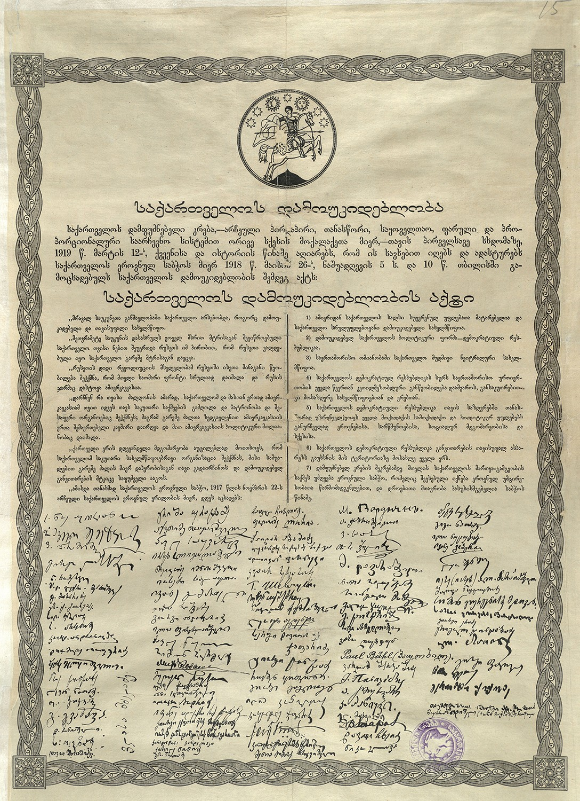

1919 წლის მარტში ჩატარდა დამფუძნებელი კრების არჩევნები, რომელშიც მონაწილეობა მიიღო ამომრჩეველთა 60%-მა. დამფუძნებელმა კრებამ შეცვალა ეროვნული საბჭო და დაამტკიცა საქართველოს სახელმწიფოებრივი დამოუკიდებლობის აღდგენის 1918 წლის 26 მაისის აქტის სამართლებრივი ძალმოსილება. საქართველოს დემოკრატიულმა რესპუბლიკამ, რომლის დამოუკიდებლობა ევროპის წამყვანმა ქვეყნებმა ცნეს, არსებობა არა სრული სამი წლით, საბჭოთა რუსეთის მიერ განხორციელებული ოკუპაციამდე, 1921 წლის 25 თებერვლამდე იარსება.
